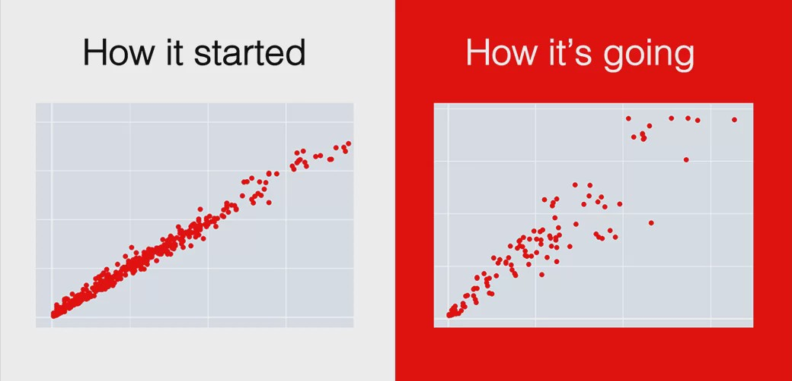

Building an MLOps strategy from the ground up
Crunch 2022
Isabel Zimmerman
September 20, 2022
if you develop models…
you can operationalize them
if you develop models…
you should operationalize them*
*well, some of them
information -> 🐶 -> actionsinformation -> model -> actionsfrom the ground up
- what is MLOps anyway?
- what tools are involved?
- can we see some MLOps?
What is MLOps?
MLOps is…
a set of practices to deploy and maintain machine learning models in production reliably and efficiently


MLOps is…
MLOps is… versioning
model
model_final
model_final_v2
model_final_v2_ACTUALLY
MLOps is… versioning
managing change in models
MLOps is… versioning
where are these models going?
- model registries
MLOps is… deploying
MLOps is… deploying
what is deployment?
MLOps is… deploying
hosting models somewhere that is not on your local laptop
MLOps is… deploying
putting models in REST APIs
MLOps is… monitoring
MLOps is… monitoring
MLOps is… monitoring
tracking model performance
from the ground up
- what is MLOps anyway? 🐶 ✅
- how can we choose the right tools?
- can we see some MLOps?
Tooling tips…
Tooling tips…
- composable
- in different environments
- with other tools
Tooling tips…
- composable
- stability
- in helping create stable workflows
- in the tool itself
Tooling tips…
- composable
- reproducible
- readable

Tooling tips…
- composable
- reproducible
- ergonomic

Tooling tips…
- composable
- reproducible
- ergonomic
(and able to do the MLOps tasks we want)
from the ground up
- what is MLOps anyway? 🐶 ✅
- what tools are involved? 🔨 ✅
- what does some code look like?
what does some code look like?
from the ground up
- what is MLOps anyway? 🐶 ✅
- what pieces are involved? 🔨 ✅
- what does this look like, really? ☕ ✅
MLOps is…
a set of practices to deploy and maintain machine learning models in production reliably and efficiently
versioning
deploying
monitoring
vetiver can help with this for your R and Python models!
Where does vetiver work?
RStudio’s pro products, like Connect
A public or private cloud, using Docker
Learn more
Documentation at https://vetiver.rstudio.com/
Talk from rstudio::conf() 2022 on Demystifying MLOps 🍪
Recent screencast on deploying a model with Docker
End-to-end demos from RStudio Solution Engineering in R and Python